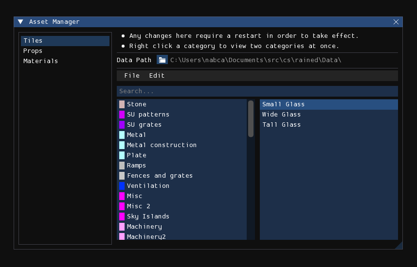
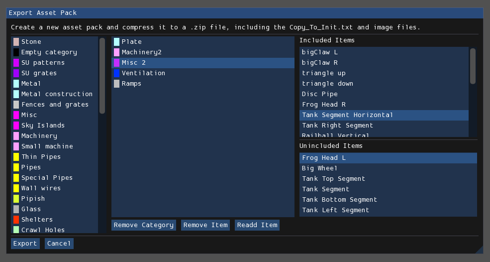

Asset manager

The asset manager is used to assist in modifying the tile, prop, and
material Init.txt files. Rather than modifying those files by hand in a text
editor, which may be cumbersome and tedious, you can instead use this asset
manager to do so in a more intuitive and less error-prone graphical fashion.
Additionally, it also provides functionality to automatically import other init
files, and functionality to export selected assets into an asset pack as a
ZIP-compressed archive.
The asset manager is accessed by pressing Tools > Asset Manager from the menubar.
Note
Changes made or saved to disk in the asset manager will not apply to Rained until you relaunch the program.
Interface
On the left is a sidebar which lets you change which init file you are viewing
and modifying. "Tiles" corresponds to Graphics/Init.txt, "Props" to
Props/Init.txt, and "Materials" to Materials/Init.txt, although that option
will be grayed out if that file does not exist.
Catalog editor
The largest section of the window is dedicated to the catalog editor, which allows you to browse and edit categories and the placement of individual assets in the selected init file. It functions equivalently to the asset browsers of the respective edit modes, but with additional functionality for editing purposes.
You can drag and move categories to reorder them. You can also do the same for assets to reorder them from within the category or move them to a different category.
However, when moved to a different category, the asset will be placed at the bottom of the target category. For finer control, you can right-click on a category to open split-view mode, which lets you view two categories at once for the purpose of controlling where an asset will be placed when trying to move one into another category. Right-click on a category again to close split-view mode.
Menubar
The menubar contains the following items:
File:
- Import Init.txt: This begins the process of an init import, detailed later in this chapter.
- Apply Changes: Any changes made to the init are not saved to disk until you press this button.
- Export .zip: This begins the process of an asset pack export, detailed later in this chapter
Edit:
- Delete Category: This deletes the currently selected category.
- Delete Asset: This deletes the currently selected asset.
- Edit Category: This lets you change the name and color (if available) of the currently selected category.
- Edit Asset: This lets you change the name of the currently selected asset.
Note
The asset manager will remind you that you have unsaved changes when you try to close the window without saving.
Importing init files
To begin the process of importing an init file, select the File > Import Init.txt menu item from the menubar of the asset manager. It will, first, open a file browser expecting you to select an Init.txt file of the currently selected asset type to import. Once given, it will then ask you for your choice of import method, of which there are three: Replace, Append, and Merge.
Replace and Append are very simple and naive import methods: Replace simply replaces the contents of the current init file with the init to import, and Append concatenates the contents of the current init file with the init to import, without attempting to check for or fix duplicate categories or assets. The Merge mode, however, is more complex, as it attempts to address duplication.
Merge behavior
Definitions:
- Source init: The init file that is being imported—the one that you have selected in the file browser. This init file is not being modified.
- Destination init: The init file that the source init is being merged to. This init file is being modified, although the changes are only saved to disk when you select File > Apply Changes from the asset manager menubar.
- Asset definition: The line declaring and describing an asset. Furthermore, "old" means it is from the destination init, and "new" means it is from the source init.
- Asset equivalence: An asset is defined by name: two definitions declare the same asset if they both declare the same asset name.
The merge process will attempt to import every category and asset definition from the source init. It can do this silently and successfully given that the following conditions are met:
- A definition with the same name does not exist in the destination init.
- The asset is not defined multiple times in the source or destination init.
Otherwise, it will pause the merge access to query user decision via a prompt.
Note
The merge process will abort if a category with the same name exists in both the source and dest init, but have differing colors.
If the asset is defined multiple times in the source init, it must first be decided which asset definition should be used when merging. A prompt will open with the header, "Multiple definitions of (asset name)", and show a list of radio buttons which you can use to decide which definition should be used for import.
Afterwards, if the asset in the destination init exists in a different category than where it is in the source init, or if the destination init defines the same asset multiple times, the merge process cannot automatically decide where to place the asset; a prompt will open with the header "Merge conflict with asset (asset name)". Multiple checkbox options will appear, with which none or multiple can be selected simultaneously. The last option will always be "Add to (category)", where the written category is the name of the category the new definition is located in. The remaining options, if applicable, when checked, indicate that it should overwrite an old definition of the asset located in the written destination category.
Mutually exclusive to the previous condition, if there is only one definition of the asset in the destination init, and if the the new asset is also defined in the destination init, and both definitions are in the same category, a prompt will open simply asking a yes/no question of if you want to overwrite the definition; that is, if you want the new definition to replace the old one. You can also choose to have the option apply to all subsequent merge conflicts of this kind.
Important
Cancelling the merge operation at any point will revert the asset catalog to how it is on disk.
Asset pack export

This interface is used to export certain assets to a ZIP-compressed archive
that includes the associated image files for each asset (if applicable) and the
relevant asset definitions within a file named Copy_To_Init.txt.
Info
The benefits of using this system includes being able to specify items without the need to separate the files manually, over taking the time to copy and paste init lines yourself.
The leftmost list in the interface displays the list of available categories that may be selected to mark for inclusion in the asset pack. The center list displays the list of categories marked for inclusion. The rightmost section of the interface displays both the list of included assets within the selected included category, and the list of exclusions within that same category. If there are no excluded assets, then the exclusion list will not appear. All assets are included within a category by default.
Pressing the "Export" button the bottom-left will open a file browser expecting you to specify the path where the ZIP archive containing the asset pack will be stored.